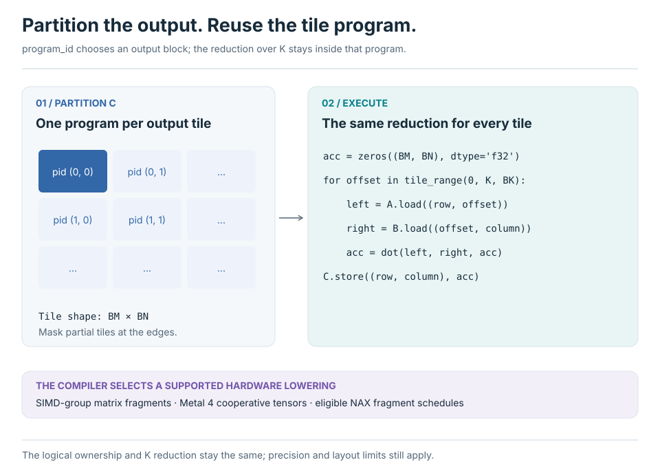
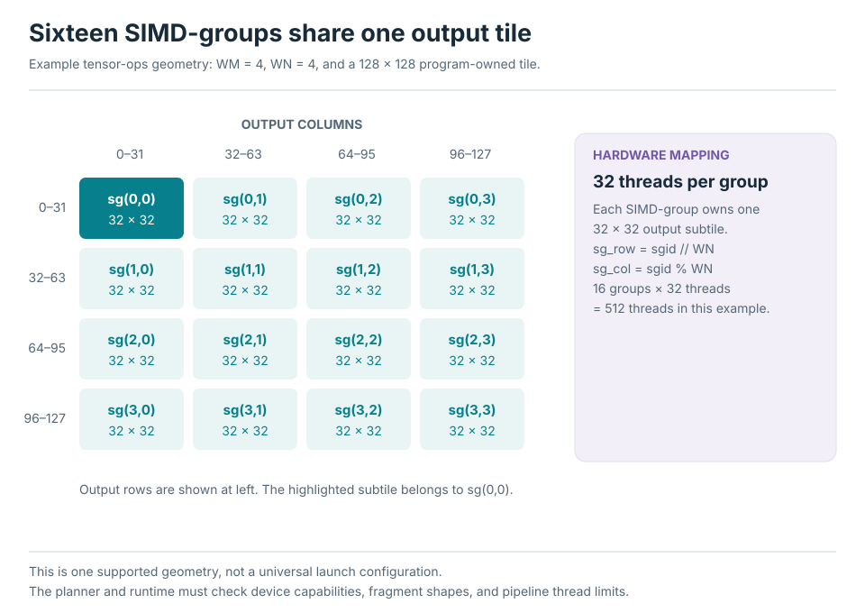
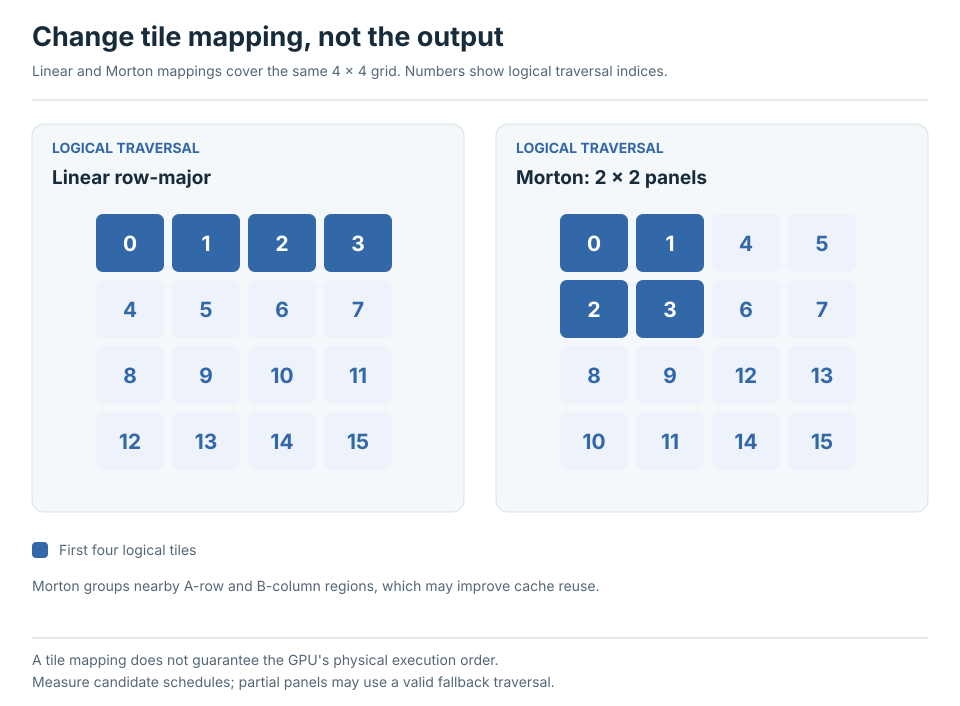

Tile Operations and Hardware Mapping¶
A matrix tile describes part of the computation, not a fixed sequence of GPU
instructions. The compiler decides how threads load it, hold its accumulators
and perform dot, within the limits of the tile sizes, dtype, device and
schedule requirements.
See Matrix Multiply (GEMM) for a working example. New kernels should
declare metile.tensor(..., block_shape=...) views so the compiler knows
their dimensions, bounds, and memory layouts. The older tile_load and
tile_store interface remains available for existing kernels.
Matrix backends¶
SIMDgroup matrix operations use simdgroup_matrix<..., 8, 8> fragments.
Threads cooperate to stage inputs in threadgroup memory, and each 32-thread
SIMDgroup computes matrix fragments. Several fragments and SIMDgroups cover a
larger program-owned output tile.
Metal 4 tensor operations use matmul2d and cooperative_tensor.
meTile checks both the runtime GPU family and whether the selected offline
compiler accepts the required Metal 4 headers and language standard. The
standard GEMM planner selects direct device loads for this path. Explicit
threadgroup-staging requirements select the SIMDgroup matrix path instead.
NAX fragment lowering expresses the direct tensor-ops path as smaller Metal IR operations. It is tuned for the M5 workloads measured in this repository. Its current matrix schedule requires 32-by-32 output fragments per SIMDgroup, a reduction tile of 16, and aligned output-column and reduction dimensions. It is not a fallback for arbitrary ragged matrices.
Automatic selection chooses a legal implementation; an ordinary launch does
not benchmark every backend. Use autotuning to compare schedules, or
SCHEDULE=metile.Schedule(...) to require a particular supported plan.
See Execution Schedules and Fusion.
How tiling works¶


A program owns one BLOCK_M-by-BLOCK_N output tile. It initializes
a float32 accumulator, then iterates over the reduction dimension in
BLOCK_K steps. Each dot adds a left/right tile product to that
accumulator. The completed tile is stored once after the loop.
Tensor descriptors supply logical bounds for partial loads and stores. Current matrix lowering requires matching float32 or float16 input/output storage and supported contiguous row-major layouts. The output must use a separate allocation from the inputs. Declaring arbitrary strides does not make them valid for every backend, and the caller must provide the storage described by the declared bounds.
Setting |
Meaning |
Example values |
|---|---|---|
|
Output rows owned by a program |
32, 64, 128 |
|
Output columns owned by a program |
32, 64, 128 |
|
Reduction tile width |
16, 32, 64 |
|
Requested SIMDgroup grid over the output tile |
2-by-2 or 4-by-4 |
Not every combination of these example values is legal. The planner checks thread count, fragment geometry, shared memory and backend constraints. With a 128-by-128 output tile and a 4-by-4 tensor-ops SIMDgroup grid, each of the 16 SIMDgroups owns a 32-by-32 subtile:


Float16 input storage can reduce bandwidth and register use while retaining float32 accumulation on supported paths. Float32 tensor-ops configurations may request relaxed precision. The accumulation dtype alone does not promise bitwise agreement with a CPU or another backend; validate the selected path against the accuracy requirements of the application.
Pointwise epilogues¶
The compiler can apply supported arithmetic after the reduction loop and before the output store. This lets ReLU, scaling and suitable GELU or SiLU expressions avoid an intermediate device-memory write/read and a second launch.
The descriptor epilogue extractor follows the stored expression’s dependency graph. It supports selected unary, arithmetic, comparison, selection, and cast operations rooted in the float32 accumulator, with independent scalar coefficients. Extra memory accesses, reductions, incompatible tile types, and unsupported control flow are outside this contract.
Fusion still needs instructions and registers, so measure the complete kernel
to see whether it helps. Inspect dispatch.explain() alongside the
timings. See Execution Schedules and Fusion for the supported epilogue contract.
Tile traversal¶
Changing the mapping from threadgroups to output coordinates can improve cache reuse. It does not control the order in which the GPU runs threadgroups.


The supported patterns include:
linear: a simple baseline mapping.diagonal: rotate a column coordinate according to its row.grouped2,grouped4,grouped8: traverse small groups of neighboring output-row tiles before moving across columns.morton: traverse complete 2-by-2 panels in Z order.hilbert: traverse complete 4-by-4 panels with a Hilbert mapping.
Inside a matrix kernel, an explicit request looks like this:
tile_row, tile_column = metile.tile_swizzle(
metile.program_id(0), metile.program_id(1),
pattern="morton", block_size=2,
)
Use block_size=4 for Hilbert. Morton and Hilbert requests fall back to
a valid traversal when the grid cannot be divided into their required panels.
With pattern="auto", schedule algebra compares finite permutations and
removes equivalent candidates before selection. This compiler-side search
does not run and time candidates on the GPU.
Fragment operations and live values¶
The decompose_nax_fragments pass expands NAX setup, reduction,
epilogue, and store operations into smaller pieces: tile/lane layout,
accumulator initialization, vector fragment loads, cooperative-tensor
packing, matrix multiply, pointwise apply, and fragment stores. Passes can
then transform those pieces without replacing an entire shader template.
Dense GEMM candidates vary reduction epochs and may preload two adjacent
reduction fragments before their matrix operations. Other candidates move
epoch fences or omit a redundant initial fence. These choices change address
arithmetic and the lifetimes of values, so their benefit depends on the shape
and target. They belong to the measured search policy, not to the mathematical
definition of dot.
Packed-weight paths¶
MXFP4 and MXFP8 lowering decodes E2M1/E4M3 values and E8M0 scales as fragments are consumed. It can compare threadgroup staging with direct fragment execution without materializing the full dense weight matrix in device memory. Candidate fragment representations and paired reduction steps trade scale reuse against register pressure.
Affine uint4 lowering uses the same fragment IR. Scale/bias loads are reused over supported 64-value reduction groups, and packed nibbles are decoded into half-precision matrix inputs. SwiGLU can combine gate and up accumulators while they are live. A sequential variant spills and reloads an intermediate fragment through threadgroup scratch to shorten overlapping lifetimes.
These specialized paths have format, shape, and toolchain restrictions. The public block-scaled runtime currently requires output dimensions divisible by 64 and a reduction dimension divisible by 32, plus Metal 4 tensor-ops support. See API Reference for its entry points and MLX-LM Backend for model-level integration.